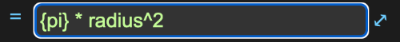
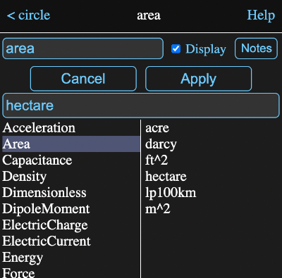

Formula Fields
All information views for tools have one or more formula fields, like this:
Tapping on one of these will switch the information view to a formula editor where you can enter or modify the formula.
These fields can be identified by the equal sign in front of them. Tapping on the equal sign will cause the value calculated by the formula to be forgotten and recalculated. This normally isn't necessary as Math Minion will forget and recalculate tools whenever one of their inputs is modified.
Formula Editor
The formula editor consists of five buttons and a large text area where the formula is entered or modified.

The lower two are a cancel button and an apply button. The latter assigns the changes to the formula. The keyboard shortcut Shift-Enter can also be used to invoke the apply button.
The top three buttons open helper views where you can select elements to be inserted into the formula:
<v> - Value Browser
Shows the available tools and parameters that you can insert into the formula. When first invoked, the available parameters will be the tools in the current model or in the case of the formula belonging to an input expression, the parent model.
If you select a model, then its name will appear below the buttons and the available parameters will be its tools. When you select another type of tool, the available parameters for that tool will appear. For instance the matrix tool has parameters for the number of columns or rows it has.
In the example below, the first selection was the model named "circle", which contains a model named "area". When area was in turn selected, it was added to the expression below the buttons. Tapping on Insert at this point would insert "circle.area" into the formula.

"u" - Unit Browser
Presents a view where you can select from the available units. The left pane contains the defined types and selecting one of those will fill the right pane with the units that are defined for that type.
In the image below, the type Area has been selected and then hectare was selected from the right pane. This places the selected unit in the input field.
Tapping the Apply button will insert the unit into the formula, enclosed in double quotes if it contains , / or ^.
You aren't limited to the units listed and can create your own by combining existing units in the input field, either by typing them in directly, or by selecting them from the lists. If you add a - or / operator to the end of the input field, selecting another unit will result in it being appended, rather than replacing the existing selection.
If you need to define a completely new base unit, see custom units on the units help page.
This browser is also used for selecting display units for expressions, matrices, data tables and graphs.
{f} - Function Browser
Presents a view where you can browse the available built in Math Minion functions. As you can see in the image below, it has what are hopefully pretty clear instructions on how to use it.
In this case the section for trigometric functions has been selected and then the sine function within it.

Indenting
In more complex formulas and with some functions, it is common to space the formula out over multiple lines and use tabs to improve the readability. There are a couple of features to assist with this.
When you add a new line to an already indented line, the editor will automatically match the indentation.
You can increase or decrease the indentation of by selecting multiple lines and then typing tab or shift-tab respectively.